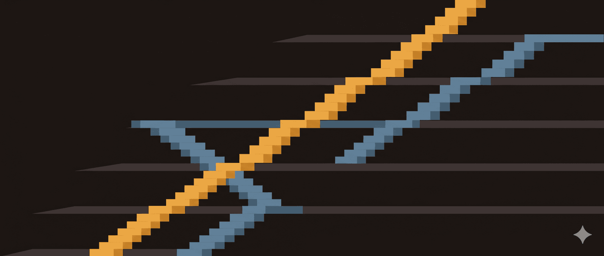

Tại sao mức lương cuối của level thấp lại cao hơn lương đầu của level kế sau?Hỏi: “Em chào cả nhà, em đang tiếp cận sang mảng lương, và có task xây thang bảng lương. Hiện tại em có lên được bảng như bên dưới đang same same với mức lương tại đơn vị, tuy em thắc mắc: Mức lương cuối của level thấp lại cao hơn lương đầu của level kế sau (ví dụ là Bậc 6 Junior >bậc 1 Middle)
Vậy em đang băn khoăn:
-
Chưa biết sai chỗ nào, khoảng cách bậc hay việc áp mức lương sai
-
Hay là có thể hiểu rằng ví dụ như Nhân sự thuộc Bậc 6 Level Middle là trọn vẹn ~ 100% yêu cầu cần có, còn như Nhân sự Bậc 1 Level Senior chỉ đạt 60% yêu cầu cần có. Nên mức lương có thể lệch như vậy.
Em rất mong cả nhà hỗ trợ em giải thích những thắc mắc băn khoăn trên ạ. Em cảm ơn cả nhà!!!”
Trả lời: Hôm trước đi tư vấn tôi gặp tình huống như này. Cụ thể, sau khi triển khai dự án, tôi đã ra được các dải với các bậc lương cho từng vị trí: Nhân viên, quản lý.
Đối tác chuẩn bị đưa vào áp dụng thì tuyển được 1 bạn trưởng phòng nhân sự mới. Bạn cũng trẻ khoảng hơn 30 tuổi. Bạn cũng thắc mắc giống hệt như tác giả của câu hỏi trên. Đại ý bạn trưởng phòng có ý kiến rằng: Lương của nhân viên thì không thể cao hơn lương của quản lý được. Bạn lý giải vì nếu lương của nhân viên cao hơn quản lý thì không ai muốn làm quản lý, làm nhân viên sẽ nhàn và nhẹ hơn.
Nói chung, câu hỏi trên thường sẽ xuất hiện ở những người mới tiếp cận vào việc xây dựng hệ thống lương không lâu. Để trả lời câu hỏi trên chúng ta đi vào từng phần dưới đây:
Phân biệt ba loại ngạch trong doanh nghiệp
- Phân biệt giữa ngạch chuyên môn và ngạch lương
Ngạch là tập hợp các vị trí có cùng tính chất với nhau. Các công ty thường dùng ngạch khi có quá nhiều vị trí nên cần nhóm lại để việc xây dựng hệ thống chính sách đơn giản hơn. Nếu gom các vị trí có cùng quyền hạn, ta có ngạch chức danh (ví dụ ngạch nhân viên, ngạch quản lý, ngạch lãnh đạo). Nếu gom các vị trí có cùng trình độ (hoặc năm kinh nghiệm hoặc điều kiện gì đó về chuyên môn), ta có ngạch chuyên môn (ví dụ ngạch lao động phổ thông, ngạch chuyên viên, ngạch chuyên viên cao cấp…). Nếu gom các vị trí có cùng mức lương vào với nhau, ta có ngạch lương (ví dụ ngạch lương A, ngạch lương B, ngạch lương C…)
Nhìn vào bức ảnh, tôi đoán người lập ra bảng này bị nhầm giữa “ngạch chuyên môn”, “ngạch chức danh” và ngạch lương. Họ trộn cả 3 ngạch vào 1 bảng. Nếu tách ra, ta sẽ thấy:
-
Các level (theo tôi hiểu đây là ngạch): Inter, Fresher, Junior, Midle, Senior thuộc ngạch chuyên môn.
-
Các level: Leader, Manager, CEO thuộc ngạch chức danh.
Bậc chức danh, bậc năng lực và bậc lương khác nhau ra sao
- Phân biệt giữa bậc chức danh, bậc năng lực và bậc lương
Một điểm nữa mà tôi thấy tác giả câu hỏi bị nhầm lẫn là chưa phân biệt được giữa bậc chức danh, bậc năng lực và bậc lương. Theo như ảnh và cách hỏi, tác giả có thể đang nghĩ rằng trưởng nhóm (leader) phải giỏi chuyên môn hơn những nhân viên có chuyên môn giỏi (senior), không những vậy họi còn làm quản lý nên lương họ phải cao hơn nhân viên. Suy nghĩ này giống bạn trưởng phòng mới vào công ty đối tác mà tôi đang tư vấn.
Chúng ta cùng phân biệt các thuật ngữ:
-
Bậc là địa điểm (hoặc vị trí) để ta đặt chân lên.
-
Bậc chức danh là địa điểm (hoặc vị trí) có quyền hạn nhất định.
-
Bậc năng lực là địa điểm (hoặc vị trí) có một số năng lực với yêu cầu đáp ứng cụ thể.
-
Bậc lương là địa điểm (hoặc vị trí) có mức tiền lương cụ thể.
Thông thường lương hay tịnh tiến theo năng lực hoặc lương tịnh tiến theo chức danh vì thế chúng ta hay giống như tác giả và bạn trưởng phòng có suy nghĩ rằng năng lực cao thì lương cao, chức danh cao thì lương cao, chức danh cao thường có năng lực cao hơn chức danh thấp, năng lực cao nhưng chức danh thấp thì lương vẫn phải thua chức danh cao. Nhưng cuộc đời “xanh” hơn chúng ta tưởng. Vẫn có những tình huống và trường hợp không như cái thông thường vừa rồi. Có những tổ chức, người có năng lực cao nhưng chức danh chỉ là nhân viên mà lương vẫn cao hơn người có chức danh quản lý. Bên cạnh đó, 1 số tổ chức không dựa trên năng lực mà dựa trên thâm niên để xét lương, vì thế có thể lương của nhân viên sẽ cao hơn quản lý (Điều này tôi không khuyến khích vì nó tạo ra vấn đề bất công bằng khi so sánh năng lực giữa các nhân viên với nhau).
Giải thích ví dụ Bậc 6 Junior và Bậc 1 Middle
- Do có sự nhầm lẫn này mà dẫn tới câu hỏi: “em thắc mắc: Mức lương cuối của level thấp lại cao hơn lương đầu của level kế sau (ví dụ là Bậc 6 Junior >bậc 1 Middle)“.
Tác giả câu hỏi lẫn giữa ngạch chức danh với ngạch lương nên nghĩ là ở level (ngạch) thấp thì có thế nào cũng không thể lương cao hơn bậc 1 của level sau. Thắc mắc này sẽ được giải tỏa nếu ta tách ngạch chuyên môn và không coi đó là ngạch lương. Và coi Inter tương ứng bậc lương 1 trên dải lương, Fresher - bậc lương 2, Junior - bậc lương 3, Midle - bậc lương 4, Senior - bậc lương 5.
Để rõ ràng hơn, dưới đây là ảnh minh họa tôi làm như sau:
-
Xác định ngạch lương: A, B, C, D
-
Các vị trí, tùy thuộc vào điểm giá trị công việc được phân vào các ngạch A, B, C, D ở trên. Ví dụ: Vị trí HR vào ngạch B, vị trí trưởng phòng phát triển dự án ở ngạch D.
-
Cả 4 ngạch trên đều có 5 bậc lương: L1, L2, L3, L4, L5.
-
5 bậc lương tương ứng với 4 bậc năng lực: Inter (kí hiệu N1) tương ứng bậc lương 1 trên dải lương , Fresher (N2) - bậc lương 2, Junior (N3) - bậc lương 3 và bậc lương 4, Midle (N4) - bậc lương 5
Như vậy, nhân viên có chuyên môn cao thì lương vẫn có thể cao hơn quản lý. Vị trí ở bậc L5 thuộc ngạch lương A vẫn có thể cao hơn vị trí ở bậc L1 ngạch B. Điều này là bình thường. Ví dụ như ở một doanh nghiệp có các vị trí chuyên gia tư vấn. Các vị trí này lương và thu nhập có thể cao hơn vị trí trưởng phòng tư vấn.
Ghi chú thêm về công thức tính lương
Tái bút:
-
Trong tình huống tư vấn của tôi, bạn trưởng phòng còn cho rằng: Nếu cùng 5 bậc lương, lương của bậc 5 - cao nhất - vị trí nhân viên sẽ không thể lớn hơn lương của bậc 5 vị trí quản lý. Trên góc nhìn nào đó thì đúng, nhưng tôi lại cho rằng sẽ có những tình huống lương bậc cao nhất của vị trí thuần chuyên môn có thể sẽ cao hơn lương bậc cao nhất của vị trí quản lý. Ví dụ như tôi đã chia sẻ: Nhân viên là chuyên gia tư vấn có lương bậc cao nhất lớn hơn lương bậc cao nhất của vị trí Quản lý tổ tư vấn.
-
Tôi đoán đây là công ty công nghệ. Vì chỉ có các công ty công nghệ mới có kiểu đặt kí hiệu như trên.
-
Quy luật của bảng lương trên:
+ Bậc inter: Lương bậc sau = hệ số lương bậc sau * mức lương bậc 1.
+ Bâch fresher: Lương bậc sau = hệ số lương bậc sau/ hệ số lươg bậc 1 * mức lương bậc 1
- Quay lại với ảnh 2 dải lương vị trí Phụ vụ và Quản lý nhà hàng của tôi ở trên. Bạn có biết làm thế nào để ra được mức lương đó không? Nó có công thức và nguyên tắc cả đấy! Hi vọng chúng ta sẽ có duyên, tôi sẽ chia sẻ tiếp với bạn.
🔍 Phân tích bài viết
📌 Tóm tắt ý chính
Bài viết giải thích rằng cấu trúc lương hợp lý trong doanh nghiệp không phải dựa trên một ngạch chức danh duy nhất, mà là sự kết hợp của ba hệ thống độc lập: ngạch chuyên môn (năng lực), ngạch chức danh (quyền hạn), và ngạch lương (mức tiền). Lương của một chuyên gia kỹ cao có thể vượt lương của quản lý bậc thấp, điều này là bình thường và mong muốn trong tổ chức.
🗺️ Mindmap
Ngạch | Chức danh (quyền hạn) → Leader, Manager, CEO | Chuyên môn (năng lực) → Inter, Fresher, Junior, Middle, Senior | Lương (mức tiền) → A, B, C, D
Lương cuối Inter (ngạch A bậc 5) > Lương đầu Fresher (ngạch B bậc 1) ✓ (Hợp lý)
💡 Insight & Góc nhìn đa chiều
Xu hướng hành chính lương toàn cầu: Các công ty công nghệ hiện đại (nhất là FAANG, các startup) đều tách rõ “IC track” (Individual Contributor — chuyên gia) khỏi “Management track” (quản lý). Điều này cho phép doanh nghiệp giữ chân những nhân tài chuyên môn cao mà không bắt buộc họ trở thành quản lý.
Ai được lợi / ai bị thiệt:
- Được lợi: Chuyên gia kỹ thuật cao, người không muốn làm quản lý nhưng muốn lương cao
- Có rủi ro: Quản lý bậc 1 nếu lương không được cạnh tranh với IC level cao
Điều ẩn sau bề mặt: Bài viết gián tiếp chỉ ra rằng nhiều doanh nghiệp VN vẫn dùng lương như “dụng cụ kiểm soát hành vi” (bắt buộc lên chức để lên lương) thay vì “công cụ thu hút tài năng” (trả lương cho năng lực).
⚖️ Phản biện
Điểm yếu trong giải thích: Tác giả không nêu rõ tiêu chí phân công bậc lương trong từng ngạch. Ví dụ: “ngạch A bậc 5” ứng với năng lực gì? (5 năm kinh nghiệm? Điểm năng lực?)
Lạm dụng có thể: Tách ngạch quá nhiều có thể dẫn đến tình trạng “quản lý lương thấp” — doanh nghiệp tuyển quản lý nhân sự trẻ (vừa trong ví dụ, ~30 tuổi) với lương thấp hơn IC senior, gây khó khăn tuyển dụng quản lý chất lượng.
Thiếu tiêu chí rõ ràng: Bài viết không đề cập cách xác định vị trí thuộc ngạch lương nào — “value point” (điểm giá trị công việc) chỉ được nhắc qua, không chi tiết phương pháp tính.
❓ Câu hỏi mở
Làm thế nào để xác định một vị trí nằm ở ngạch lương nào mà không dựa trên chủ quan? Phải dùng tiêu chí: độ phức tạp việc, tác động kinh doanh, hay chi phí thay thế?
Khi IC senior lương vượt quản lý, động lực của quản lý là gì? Quyền lực? Phúc lợi khác? Hay đó là tín hiệu doanh nghiệp cần mô hình quản lý mới (ít quản lý hơn, nhiều leadership hơn)?
Công ty Việt có sẵn sàng áp dụng mô hình này chưa? Nhiều sếp Việt vẫn coi “lương quản lý > lương nhân viên” là luật tự nhiên.
🇻🇳 Liên hệ Việt Nam
Ngành gia công kim loại & thiết kế khuôn (công ty Nhật):
- Lương bậc công nhân cao cấp (20+ năm) có thể vượt lương quản lý nhà xưởng vừa lên chức — điều này tạo xung đột tâm lý với quản lý.
- Nhiều doanh nghiệp Nhật áp dụng mô hình này (chuyên gia kỹ thuật = “takumi” có lương cao), nhưng doanh nghiệp VN chưa bắt chước.
- Nếu một công ty Nhật tại Việt Nam áp dụng, cần đảm bảo quản lý cấp trung được bù đắp bằng thứ khác (cổ phiếu, bonus, linh hoạt công việc) để tránh mất người tài.
Thị trường lao động VN rộng lớn:
- Tốc độ tăng lương dựa trên thâm niên (không phải năng lực) vẫn phổ biến → nhiều lao động cao tuổi đòi lương cao mà năng lực tụt.
- IC track chưa phát triển trong doanh nghiệp Việt → thiếu lối thoát cho người không muốn quản lý.
- Gợi ý: Công ty nên thử áp dụng bậc “Senior Specialist” (lương ~= quản lý) để thí điểm.
📖 Giải thích thuật ngữ
- Ngạch (Grade): Nhóm các vị trí hoặc mức độ có đặc điểm chung (có thể là chức danh, năng lực hoặc mức lương).
- Ngạch chuyên môn: Chia theo năng lực/kinh nghiệm (Inter = Intern/Beginner, Fresher, Junior, Middle, Senior).
- Ngạch chức danh: Chia theo quyền hạn/trách nhiệm (nhân viên, leader, manager, giám đốc).
- Ngạch lương: Chia theo mức tiền (A=10-15M, B=15-20M, C=20-30M, D=30M+).
- Bậc lương (Level): Vị trí cụ thể trong một ngạch lương (L1, L2, L3…).
- Point lương / Value Point: Điểm giá trị công việc, dùng để xác định ngạch lương của một vị trí.